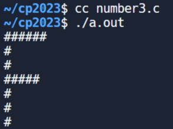

w15 <<
Previous Next >> C.EX
ANSIC
1.
#include <stdio.h>
int main()
{
// 印出姓名
printf("姓名 : Alexandra Abramov\n");
// 印出出生日期
printf("生日 : 1975年7月14日\n");
// 印出手機號碼
printf("手機 : 99-9999999999\n");
// 表示程式成功執行
return 0;
}

2.
#include <stdio.h>
int main(int argc, char** argv) {
// 檢查 C 標準版本
#if __STDC_VERSION__ >= 201710L
printf("我們使用的是 C18 標準！\n");
#elif __STDC_VERSION__ >= 201112L
printf("我們使用的是 C11 標準！\n");
#elif __STDC_VERSION__ >= 199901L
printf("我們使用的是 C99 標準！\n");
#else
printf("我們使用的是 C89/C90 標準！\n");
#endif
// 表示程式成功執行
return 0;
}
3.
#include <stdio.h>
int main()
{
// 印出一行井字號
printf("######\n");
// 印出一個單獨的井字號
printf("#\n");
// 印出一個單獨的井字號
printf("#\n");
// 印出一行井字號
printf("#####\n");
// 印出一個單獨的井字號
printf("#\n");
// 印出一個單獨的井字號
printf("#\n");
// 印出一個單獨的井字號
printf("#\n");
return 0;
}

4.
#include <stdio.h>
int main()
{
// 宣告並初始化字符變數
char char1 = 'X';
char char2 = 'M';
char char3 = 'L';
// 印出原始和反轉後的字符
printf("%c%c%c的反轉是%c%c%c\n",
char1, char2, char3,
char3, char2, char1);
return 0;
}
5.
#include <stdio.h>
/*
用於存儲矩形寬度和高度的變數（以英寸為單位）
*/
int width;
int height;
int area; /* 用於存儲矩形的面積的變數 */
int perimeter; /* 用於存儲矩形的周長的變數 */
int main() {
/* 為高度和寬度賦值 */
height = 7;
width = 5;
/* 計算矩形的周長 */
perimeter = 2 * (height + width);
printf("矩形的周長 = %d 英寸\n", perimeter);
/* 計算矩形的面積 */
area = height * width;
printf("矩形的面積 = %d 平方英寸\n", area);
return 0;
}
6.
#include <stdio.h>
int main() {
int radius; /* 用於存儲圓的半徑的變數 */
float area, perimeter; /* 用於存儲圓的面積和周長的變數 */
radius = 6; /* 將半徑賦值為6 */
/* 計算圓的周長 */
perimeter = 2 * 3.14 * radius;
printf("圓的周長 = %f 英寸\n", perimeter);
/* 計算圓的面積 */
area = 3.14 * radius * radius;
printf("圓的面積 = %f 平方英寸\n", area);
return 0;
}
7.
#include <stdio.h>
int main()
{
int a = 125, b = 12345; /* 宣告並初始化整數變數 */
long ax = 1234567890; /* 宣告並初始化長整數變數 */
short s = 4043; /* 宣告並初始化短整數變數 */
float x = 2.13459; /* 宣告並初始化浮點數變數 */
double dx = 1.1415927; /* 宣告並初始化雙精度變數 */
char c = 'W'; /* 宣告並初始化字符變數 */
unsigned long ux = 2541567890; /* 宣告並初始化無符號長整數變數 */
/* 各種算術運算和類型轉換 */
printf("a + c = %d\n", a + c);
printf("x + c = %f\n", x + c);
printf("dx + x = %f\n", dx + x);
printf("((int) dx) + ax = %ld\n", ((int) dx) + ax);
printf("a + x = %f\n", a + x);
printf("s + b = %d\n", s + b);
printf("ax + b = %ld\n", ax + b);
printf("s + c = %hd\n", s + c);
printf("ax + c = %ld\n", ax + c);
printf("ax + ux = %lu\n", ax + ux);
return 0;
}
8.
#include <stdio.h>
int main()
{
int days, years, weeks;
days = 1329; // 總天數
// 將天數轉換為年、周和天
years = days / 365; // 計算年數
weeks = (days % 365) / 7; // 計算周數
days = days - ((years * 365) + (weeks * 7)); // 計算剩餘天數
// 印出結果
printf("年數: %d\n", years);
printf("周數: %d\n", weeks);
printf("天數: %d \n", days);
return 0;
}

9.
#include <stdio.h>
int main()
{
int days, years, weeks;
days = 1329; // 總天數
// 將天數轉換為年、周和天
years = days / 365; // 計算年數
weeks = (days % 365) / 7; // 計算周數
days = days - ((years * 365) + (weeks * 7)); // 計算剩餘天數
// 印出結果
printf("年數: %d\n", years);
printf("周數: %d\n", weeks);
printf("天數: %d \n", days);
return 0;
}
10.
#include <stdio.h>
int main()
{
int x, y, result; // 宣告兩個整數及其乘積的變數
// 提示使用者輸入並將其存儲在 'x'
printf("\n輸入第一個整數：");
scanf("%d", &x);
// 提示使用者輸入並將其存儲在 'y'
printf("輸入第二個整數：");
scanf("%d", &y);
result = x * y; // 計算 'x' 和 'y' 的乘積
// 印出乘積
printf("上述兩個整數的乘積 = %d\n", result);
}
w15 <<
Previous Next >> C.EX